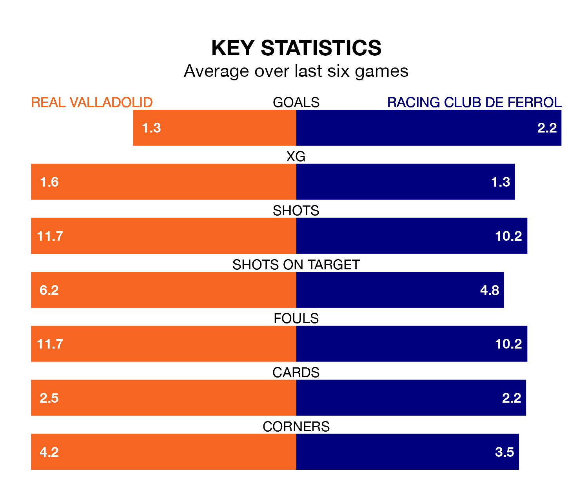

Real Valladolid host Racing Club de Ferrol in Thursday's late match at the Estadio Municipal José Zorrilla looking to bounce back from defeat last time out in the Segunda División.
Real Valladolid, who sit second in the league after 20 games, fell to a 1-0 away defeat to Villarreal B on Monday.
They face a Racing side who picked up a win in their last match, a 3-1 victory against CD Tenerife, and who sit fourth in the table.
With 28 goals in 20 games so far this season, Racing are scoring more than average in the league with 1.4 goals per game. And they are conceding fewer than average, letting in 23 goals at a rate of 1.1 per game.
Valladolid, meanwhile, are average scorers, with 1.2 goals per game. They have conceded 1.1 goals per game.
Real Valladolid are in mixed form in the Segunda División, with three wins and a draw from their last six games.
With three wins and two draws over that period, Ferrol's form is slightly better – they have taken 11 points from 18, compared to the home side's 10.
Racing Club de Ferrol's Heber Pena Picos is among the league's most creative players, racking up five assists in 17 appearances so far this season, and holding fourth spot in the Segunda División's assist charts.
For Valladolid, Stanko Jurić has set up the most goals, having laid on four assists in 18 games.
